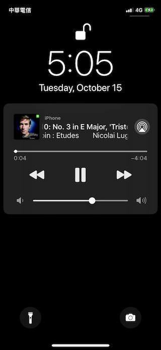
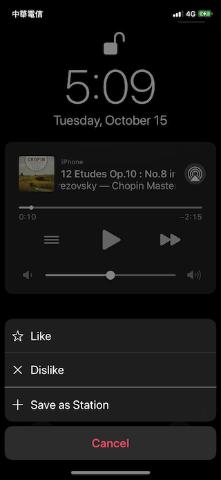

CarPlay
蘋果在 iOS 7.1 開始推出 CarPlay 功能。CarPlay 的使用體驗是由 CarPlay 專屬的車用音響系統以及 iOS 兩者共同創造的，CarPlay 車用音響會有一個小型的觸控螢幕，當用戶的 iPhone連接到音響系統後，就會把這個小螢幕變成另外一個 iPhone 的延伸螢幕，在這個螢幕上，會用圖示、文字都比較大的 UI 設計，列出 iOS 的一些基本 App，包括電話、簡訊、音樂、地圖等，由於介面中的元素較大，加上可以用 Siri 語音操作，就讓用戶在開車的時候，比較方便操作這些功能，也更能夠顧及行車安全。
蘋果開放軟硬體廠商開發 CarPlay 相關應用，如果你是汽車、或是汽車音響廠商，你可以針對車輛的功能開發專屬的 App，像是可以用 CarPlay 操作開關車窗、調整空調等，至於一般會在 App Store 上的 App，也只開放了導航與音樂服務兩種類型。如果你想要讓你的 App 出現在 CarPlay 的延伸螢幕中，在 code sign 的時候還需要加上額外的 entitlement，這個 entitlement 需要額外向蘋果申請，也大概會是一般開發者進入 CarPlay 開發的門檻。
蘋果不允許音樂類型的 App，像 KKBOX，在實作 CarPlay 功能的時候，客製自己的使用者 UI，而是只能夠用一種階層式的方式瀏覽 App 提供的內容，從中挑選想要播放的歌曲/歌單。也就是說，蘋果設計好了 CarPlay 上的音訊類型 App 的 UI，第三方 App 只能夠提供一種階層式的資料，讓 iOS 把我們提供的資料填入到 CarPlay UI 裡頭。蘋果提供了一個叫做 MPPlayableContentManager 的 class，我們可以指定 MPPlayableContentManager 的 data source 與 delegate，透過 data source 與 delegate 提供資料。
實作 CarPlay 功能
要讓用戶可以完整使用 CarPlay，我們需要…
- 實作 MPRemoteCommandCenter
- 實作 MPPlayableContentManager 的 data source 與 delegate
- 在放時在 MPNowPlayingInfoCenter 填入歌曲資訊
這個部分其實蘋果並沒有說得很清楚，在指定 MPPlayableContentManager 的 data source 與 delegate 之前，必須先設定 MPRemoteCommandCenter 當中的指令，不然，即使設定了 MPPlayableContentManager 的 data source，MPPlayableContentManager 也不會開始向 data source 要求資料。倒是 MPNowPlayingInfoCenter 可以稍晚設定。
再談 MPRemoteCommandCenter
一般指令
一般來說，我們至少會實作以下的 MPRemoteCommandCenter 指令：
- playCommand：開始播放
- pauseCommand：暫停播放
- stopCommand：完全停止播放。Pause 與 Stop 的差別在於，Pause 只是停止目前正在播放用的 Audio Graph/AVAudioEngine/Audio Queue，但是 Stop 會完全放開目前播放器元件參考到的歌單/歌曲物件
- togglePlayPauseCommand：檢查目前是否正在播放，播放中就執行 pause，反之則執行 play
- previousTrackCommand：跳到前一首歌曲
- nextTrackCommand：跳到下一首歌曲
播放模式
然後以下幾個指令需要特別注意：
- changeRepeatModeCommand：修改循環模式，包括循環播放、不循環播放、單手循環播放
- changeShuffleModeCommand：修改播放模式，包括循序播放、隨機播放…等
在 MPRemoteCommandCenter 當中絕大多數的指令，都是用戶真的做了手動操作、在各種地方按下按鈕之後才觸發，但是 changeShuffleModeCommand 不一樣，如果我們實作了 changeShuffleModeCommand，在用戶接上了一般的車用音響之後，就會被直接呼叫一次。
iPhone 除了支援 CarPlay 車用音響之外，也支援更早之前的車用音響。蘋果在 2001 年就推出了最早的 iPod，在 iPhone 推出之前，就已經有一套讓車用音響支援 iPod 的協定，所以，在這樣的車用音響上，iPhone 會被當成是一支 iPod，也就是說， MPRemoteCommandCenter的指令，其實不只會用在 CarPlay 車機上，也會用在非 CarPlay車機上。所以，當我們在實作 changeShuffleModeCommand 與 changeShuffleModeCommand 的時候，必須參考從外部傳進來的新狀態。像是：
先指定 changeRepeatModeCommand 與 changeShuffleModeCommand 的 target/action：
center.changeRepeatModeCommand.addTarget(self, action: #selector(changeRepeatMode(_:)))
center.changeShuffleModeCommand.addTarget(self, action: #selector(changeShuffleMode(_:)))
實作方式：
@objc func changeRepeatMode(_ event: MPChangeRepeatModeCommandEvent) -> MPRemoteCommandHandlerStatus {
let type = event.repeatType
/// 使用傳入的 repeatType
return .success
}
@objc func changeShuffleMode(_ event: MPChangeShuffleModeCommandEvent) -> MPRemoteCommandHandlerStatus {
var type = event.shuffleType
/// 使用傳入的 shuffleType
return .success
}
播放進度
跟前述「播放模式」相關的指令一樣，如果我們想要讓我們的 App 可以從待機畫面 /CarPlay 畫面中，在播放進度列上拖拉調整，就要實作 changePlaybackPositionCommand。在實作changePlaybackPositionCommand 的時候，也需要使用傳入的時間。
首先指定 target/action：
center.changePlaybackPositionCommand.addTarget(self, action: #selector(changePlaybackPosition(_:)))
然後從傳入的 event 取出用戶想指定的播放時間位置：
@objc func changePlaybackPosition(_ event: MPChangePlaybackPositionCommandEvent) -> MPRemoteCommandHandlerStatus {
let time = event.positionTime
self.seek(to: time) // 要求播放器調整到指定的位置
self.updateNowPlayingInfo() // 更新 MPNowPlayingInfoCenter 中的資料
return .success
}
以下也是可以用來調整播放進度的指令：
- seekBackwardCommand
- seekForwardCommand
- skipBackwardCommand
- skipForwardCommand
喜愛歌曲（Feedback Commands）
在 iOS 的待機畫面中，其實支援兩種不同模式的控制方式：
- 一般模式：可以跳到前一首、下一首歌曲，以及調整播放進度
- 電台模式：只能夠跳到下一首，不能夠跳到前一首，而前一首歌曲的按鈕位置變成一個選單，在選單中，可以讓用戶決定是否要將歌曲加到「我的最愛」或是「書籤」中
一般模式如下圖：

電台模式如下圖：

只要實作了以下指令，就會進入電台模式：
- likeCommand：將目前歌曲加入到我的最愛
- dislikeCommand：將目前的歌曲移出我的最愛
- bookmarkCommand：將目前歌曲加入書籤
不過，當我們想要從電台模式跳回一般模式的時候，只是將這些 command 設成 enabled 為
NO 是不夠的，必須要呼叫 removeTarget 才行。
另外，在 iOS 11 上，如果呼叫了這些指令，也會同時觸發 seekForwardCommand，而在呼叫nextTrackCommand 與 previousTrackCommand 的時候，也會莫名其妙的呼叫到
seekBackwardCommand。由於這些行為都不符合預期，我們建議在 iOS 11 上，不要實作
seekForwardCommand 與 seekBackwardCommand。
實作 MPPlayableContentManager 的 Data Source 與 Delegate
為了方便起見，我們實作了一套叫做 KKCarPlayManager 的 library，實作 MPPlayableContentManager 的 data Source 與 delegate，並且在 GitHub 上面公開程式碼，可以用 CocoaPods 或 Swift Package Manager 的方式載入。 MPPlayableContentManager會向他的 data source 要求每個層次的 MPContentItem 物件，組合成一個樹狀結構，最後形成在 CarPlay 螢幕上的選單介面。
在 KKCarPlayManager 中，我們有一個繼承自 MPContentItem 的 KKBasicContentItem，要完成整個 CarPlay 的功能，就是按照實際情況，繼續建立更多 KKCarPlayManager 的 subclass。
這個 item 上加了一個叫做 children 的 property，以及這兩個 method：
loadChildren(callback:)play(callback:)
在這個樹狀結構中，會分成是目錄的節點、或是可以播放的節點，你可以用 MPContentItem
的 container 與 playable 這兩個 property，來標示是哪一種節點。如果某一層的節點是一個目錄的話，就要實作 loadChildren(callback:)，這代表我們發現用戶想要開始載入某一層目錄當中的資料，在載入成功之後呼叫傳入的 callback block。而如果是用來播放用的節點的話，就要實作 play(callback:)，無論成功或是失敗，都要呼叫
callback block。
在連接 CarPlay 裝置時 Audio Graph 的行為
在使用 Audio Graph 的時候，我們要盡量避免呼叫了 AUGraphStop() 之後，馬上再呼叫
AUGraphStart()。在一般的狀況下，這樣寫並沒有什麼問題，但是當 iOS 裝置接上了
CarPlay 車機之後，這樣呼叫的時候，AUGraphStart() 就會發生失敗而無法繼續播放。